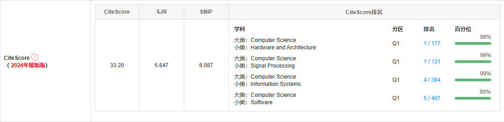

Pixel and region level information fusion in membership regularized fuzzy clustering for image segmentation
Pixel and region level information fusion in membership regularized fuzzy clustering for image segmentation
发表于期刊Information Fusion 2023

摘要：
隶属度正则化模糊聚类方法应用了一个重要的先验，即相邻的数据点根据亲和度/相似度矩阵应该具有相似的隶属度。因此，它们在许多数据挖掘任务中都取得了良好的性能。然而，这些聚类方法在正则化过程中并没有充分利用图像空间信息。它们在图像分割问题上的性能仍然不理想。在本文中，我们首先关注于建立一个新的亲和矩阵来存储和呈现图像空间信息，以帮助成员正则化模糊聚类方法获得良好的分割结果。为此，通过融合像素级和区域级信息来计算亲和度值，以表示图像中两点之间的微妙关系。此外，为了减少图像噪声的影响，我们在算法的迭代中使用了固定的聚类中心，因此，隶属度值的更新仅以融合信息的先验为指导。在合成图像数据集和真实图像数据集上的实验结果表明，该方法比现有的聚类方法具有更好的分割效果。
1.介绍
图像分割是图像分析中的关键环节，已广泛应用于目标识别[1]、医学诊断支持系统[2]、工业过程[3]等计算机视觉任务[4,5]。它是一种将图像分割成几个具有独特属性的特定区域的技术，可以看作是一个像素聚类过程。许多关于图像分割的方法已经被提出，如基于超像素的方法[6]、基于神经网络[7,8]的监督方法、聚类[9,10]等。虽然这些技术在一定程度上对图像分割取得了良好的效果，但对于不同的图像都不具有足够的鲁棒性和效率。例如，基于超像素的方法对复杂图像不能很好地保留细节，基于神经网络的监督方法需要大量的训练样本和标记图像，而且分割结果具有粗糙的轮廓。本文主要研究了基于模糊聚类的无监督分割方法。
在实践中，聚类由于其有效性，是图像分割中最常用和最重要的方法之一。在图像分割的聚类算法方面也有许多进展。提出了基于K-means聚类算法和一种快进量子优化算法的FFQOAK
[11]方法。这是一种硬划分方法，只承认像素属于单个簇/段。此外，Pritpal等人[12]提出了一种基于模糊集理论和相关概念的模糊d-均值融合聚类算法。模糊集的固有模糊模型具有四个固定程度的成员关系，如真、假、真模糊和假模糊。在各种聚类方法中，模糊聚类在处理图像分割[13]的模糊特性中的有效性和鲁棒性得到了广泛的研究和应用。模糊c-均值（FCM）是一种基于模糊集理论的经典聚类算法，最初由Dunn
[14]提出，后来由Bezdek
[15]进行改进。模糊集理论不同于模糊集理论。每个数据的隶属度始终属于范围[0,1]。此外，模糊聚类是一种软分区方法，它允许数据点在所有聚类中都具有成员资格，在处理图像[16]中的边缘信息时比硬分区方法效果更好。但传统的模糊聚类方法在处理有噪声或其他伪影的图像时往往效果较差，因此如何在复杂图像上获得准确的分割结果仍然是一项具有挑战性的任务[17]。
为了克服FCM的缺点，对距离测度的重新设计进行了重视和探索，因此，提出了一些核诱导的FCM变量[18,19]，这种核诱导的距离测度被视为非线性数据挖掘和图像分割的一个强大的形式工具。为了解决普通FCM对模糊指数值变化敏感的问题，宫本等人开发了最大熵FCM
[20]，而且，两个[21,22]都引入了相对熵来改进其目标函数。近年来，为了解决不准确的分类信息或图像分割受离群值的影响，一些算法基于模糊聚类和信息融合[23–25]提出，如Musa
et al.
[26]试图提出一个基于模糊聚类集成聚合器的基础集群和实现成功的性能、速度和鲁棒性。
事实上，在模糊聚类过程中涉及到一些利用空间信息的技术，并对处理有噪声的图像分割任务[27]有积极的影响。例如，Guo等人[28]开发了一种基于噪声检测（NDFCM）的自适应图像分割FCM，其中采用两种图像滤波方法来抑制噪声，并使用一个参数，通过测量每个邻域的灰度水平的方差来保持图像细节。为了实现鲁棒的分割结果与低执行时间，Lei等[29]开发了一个快速、鲁棒的模糊c均值聚类算法（FRFCM）基于平方社区空间水平信息，采用形态重建和会员滤波平滑图像详细保存，降低计算成本。Zhang等[30]在考虑空间邻域信息的基础上，考虑了测量值与理论值之间的偏差，提出了偏差-稀疏模糊c-均值（DSFCM_N）来提高图像分割的聚类性能。毕竟，研究人员正专注于使用越来越复杂的基于空间信息的技术来解决复杂的图像分割问题，但他们忽略了图像中不同层次的空间信息的使用，如区域级[31]的空间信息。
近年来，在多视图数据集[32]和真实世界数据库[33]上，提出了许多针对不同类型数据挖掘任务的成员正则化模糊聚类方法。RSSFCA
[34]涉及高斯度量下的正则化，将其集成到模糊聚类算法的目标函数中，以获得稀疏的隶属度，以减少噪声特征的比例。Chen等人[35]提出了一种基于空间信息构造的图的正则化FCM。[36]等人提出了一种成员变异正则化方法来修改FCM，用于具有噪声和不完整数据的图像分割。这些方法中的正则化是试图充分利用最终反对函数中对数据的先验知识来指导聚类处理[37,38]。然而，这些最近提出的隶属度正则化模糊聚类方法[39,40]大多用于数据挖掘，而不将空间信息作为先验知识，这对图像分割问题很有价值。更广泛地说，成员正则化模糊聚类的亲和性不适用于图像分割任务，存储在亲和矩阵中的先验知识不能充分反映图像像素点之间的相似性。换句话说，这些隶属度正则化模糊聚类方法需要改进，采用一种新的适当的亲和/相似矩阵获取图像分割方法来考虑数据的空间结构，这是图像数据[37,41]的主要特征。
一般来说，亲和矩阵是一种基本的统计技术，用于度量一组数据点中的相似性或关系。它存储并呈现了关于数据内在结构的先验知识。该矩阵可以用一些半监督学习方法[42,43]得到，也可以用一些光谱聚类方法[44,45]构造。它在数据挖掘问题上工作得很好。例如，模糊聚类获得的会员可以被视为一个新的表示原始数据，然后数据点彼此应该拥有类似的会员，并基于这个角度，郭et
al. [46]探索成员亲和力套索项（MAL）改进模糊聚类方法数据挖掘，命名MALFCM
FCM的增强版本。实际上，对于图像分割问题，图像中两个像素点的亲和度值应该同时反映像素级和区域级上的相似性。这意味着在同一集群中分配的附近的两个点同时具有空间一致性和相似的灰度值。因此，在此基础上，本文以MALFCM为例，提出了一种新的隶属度正则化模糊聚类亲和矩阵，以提高其在图像分割上的性能。
简而言之，虽然人们为提高图像分割结果付出了大量的努力，但现有的算法主要存在以下限制和挑战。
（1）传统的模糊聚类方法只采用单一空间信息来提高其对图像分割的性能。基于聚类的图像信息是利用不同层次图像分割模型的关键。
（2）在这些所讨论的模型中，由于隶属度正则化方法的亲和矩阵中存储的先验知识，不能充分反映图像像素点之间的相似性。
在本研究中，为了解决上述挑战，我们提出了一种基于信息融合技术的模糊聚类方法。在该方法中，提出了一种新的亲和矩阵来存储和呈现关于图像的先验知识。此外，为了抑制噪声和其他异常值的影响，我们使用了一个同时考虑像素的空间信息和灰度信息的加权距离。具体来说，在该方法中，像素之间的亲和度受到两层空间约束的影响：像素级近邻域和区域级空间上下文，这是通过简单线性迭代聚类（SLIC）[6]、均值位移[47]等超像素方法获得的。与基于超像素和其他基于模糊的方法相比，一个像素的标记会受到上述两种信息的影响。通过融合这两个层次的信息，提出基于信息融合的方法将缩小同一区域像素之间的差异，减少像素的相似性属于不同地区，即使其中一些被噪声和其他异常值，同时保持图像细节。此外，预计成员关系的更新仅受融合信息的指导，因此我们在合理的迭代处理中使用固定的聚类中心进行初始化。基于此融合信息，该方法利用更多的空间数据先验知识，指导聚类过程，找到更准确和合理的分割结果。
我们的主要贡献可以总结如下：
- 新的亲和矩阵：提出了一种亲和矩阵\(A^{SR}\)，并通过融合像素和区域级信息进行计算，改进了图像分割的隶属度正则化模糊聚类方法。这种更精确的先验知识，存储在亲和矩阵中，反映了图像中两点之间的微妙关系。
- 基于信息融合的新模型：在新的亲和矩阵的基础上，利用加权距离融合了像素的空间信息和灰度信息。因此，提出了一种改进的成员正则化模糊聚类方法，并命名为\(A^{SR}MF\)。
- 使用固定聚类中心的策略：仅凭简单的直觉，在亲和矩阵中存储的融合信息的指导下，可以得到合理的分割结果。因此，我们采用了使用固定的聚类中心，利用新的亲和矩阵通过正则化项目更新隶属度值的策略，即先验知识将在分割任务中发挥更大的作用。
本文的其余部分组织如下。在第二节中，我们将描述与我们的研究相关的工作的概述。在第3节中，所提出的方法在这里显示。实验结果报告见第4节。最后，我们在第5节中作出结论。
2.前期准备工作
在本节中，我们将简要回顾一下与我们的研究相关的工作，包括传统的图像分割的模糊聚类、超像素技术和一些隶属度正则化模糊聚类方法。
2.1.图像分割的模糊聚类方法
对于图像分割，模糊聚类使用模糊隶属关系将数据/像素点分配给每个段/区域。我们以经典的FCM模型为例来说明它。给定一个图像\(X=\{X_{1},X_{2},\dots,X_{N}\}\)，FCM通过迭代最小化如下定义的函数，将𝑁个像素点划分为𝐶个簇/段： \[J_{\mathrm{FCM}}=\sum_{i=1}^{N}\sum_{j=1}^{C}u_{i j}^{m}\vert\vert X_{i}-P_{j}\vert\vert^{2}\] 限制： \[\sum_{j=1}^{C}u_{i j}=1,i=1,\ldots,N\] 其中\(m>1\)是控制会员模糊性的模糊因子，\(0\,\leq\,u_{i j}\,\leq\,1\)，𝑃𝑗表示𝑗th集群的原型/中心值，𝑢𝑖𝑗是𝑖th数据点对𝑗th集群的会员值，FCM采用拉格朗日乘数法更新会员\(U(u_{i j})\)和集群中心\(P(P_{i})\)，如下 \[u_{i j}={\frac{(\lVert X_{i}-P_{j}\rVert)^{-2/(m-1)}}{\sum_{j=1}^{C}(\lVert X_{i}-P_{j}\rVert)^{-2/(m-1)}}}\]
\[P_{j}=\frac{\sum_{i=1}^{N}u_{i j}^{m}X_{i}}{\sum_{i=1}^{N}u_{i j}^{m}} \]
当函数收敛或达到最大迭代次数时，此更新过程就会结束。
然而，正如我们从FCM的目标函数中可以看到的，它没有考虑任何关于数据的空间关系的信息，这使得传统的FCM对噪声和其他干扰很敏感。将空间信息纳入目标函数是缓解FCM
[48,49]弱点的最常用的尝试之一。Ahmed等人[50]提出了具有空间约束的FCM_S，以便允许一个像素的标记受到其邻域标签的影响。目标函数：
\[J_{\mathrm{FCM}_{-}S}=\sum_{i=1}^{N}\sum_{j=1}^{C}u_{i
j}^{m}(\|X_{i}-P_{j}\|^{2}+\frac{\alpha}{N_{R}}\sum_{k\in
N_{i}}\|X_{k}-P_{j}\|^{2})\] 其中，\(𝑁_𝑖\)代表落入\(X_i\)周围窗口的邻居集，\(N_R\)为其基数，\(\alpha\)控制空间项的影响。按照同样的思路，在[51]中提出了FCM_S的两个低复杂度变量，FCM_S1和FCM_S2，他们分别采用均值滤波图像和中值滤波图像来获取空间邻域信息。因此，简化的目标函数可以改写为
\[J_{\mathrm{FCM}_{S}S1/S2}=\sum_{i=1}^{N}\sum_{j=1}^{C}u_{i
j}^{m}(||X_{i}-P_{j}||^{2}+\alpha\|\bar{X}_{i}-P_{j}||^{2})\]
其中\(\bar{X}_{i}\)为\(X_i\)附近指定窗口内邻居的平均值或中值。遵循这一趋势，研究人员专注于使用越来越复杂的基于空间的技术来解决复杂的图像分割问题，但他们忽略了图像中不同层次的空间信息的使用，如基于超像素技术的区域层次。
2.2.基于超像素的图像分割方法
超像素算法根据像素的位置关系、颜色、纹理等特征将像素划分为有意义的区域。它们在捕获图像冗余方面具有很大的优势，大大降低了后续图像处理任务的复杂性，并广泛应用于图像分割应用。生成超像素的算法有很多，如平均位移算法[47]、多尺度形态梯度重建（MMGR）[52]和简单线性迭代聚类（SLIC）[6]。
平均位移是一种基于密度估计的方法，假设不同簇的像素符合不同的概率分布，迭代计算并更新像素的平均位移向量，生成超像素区域。
MMGR采用不同的结构元素获得多个重建图像，然后将这些重建的梯度图像融合，获得超像素图像。
SLIC采用k-means，利用颜色和空间信息对CIELAB局部颜色空间中的像素进行聚类。在SLIC中的距离测度被表示为
\[d_{l a
b}=\sqrt{(l_{j}-l_{i})^{2}+(a_{j}-a_{i})^{2}+(b_{j}-b_{i})^{2}}\]
\[d_{s}={\sqrt{(x_{j}-x_{i})^{2}+(y_{j}-y_{i})^{2}}}\]
\[d(i,c)=\sqrt{(d_{l a b})^{2}+(\frac{d_{s}}{S})^{2}m_{s}^{2}}\]
其中\(d_{lab}\)代表两个像素之间的颜色空间差异，\([l,a,b]^T\)是CIELAB颜色空间中像素颜色的表示，\(𝑑_𝑠\)是两个像素之间的空间距离，\([x,y]^T\)指像素的空间位置，\(d(i,c)\)是一个加权距离，用于测量第\(i\)个像素和第\(c\)个聚类中心之间的距离，\(m_s\)是用于平衡\(d(i,c)\)中颜色和空间信息的参数，\(\mathbf{S}\times\mathbf{S}\)为所需超像素的大小，其中\(S={\sqrt{N/C_{s}}}\)，𝑁为图像像素的数量，\(𝐶_𝑠\)为超像素的数量。
在Liu的论文[27]中，提出了一种基于均值移算法自适应局部信息的模糊聚类方法。目标函数被定义为
\[J_{L i
u^{\prime}s}=\sum_{i=1}^{C}\sum_{j=1}^{N}u_{i j}D_{i
j}^{L}+\lambda\sum_{i=1}^{C}\sum_{j=1}^{N}u_{i j}\log(\frac{u_{i
j}}{\pi_{i j}})\] 其中，𝜆是控制簇模糊性的超参数，\(𝐷_{𝑖𝑗}^𝐿\)是结合像素级和区域级差异的距离函数，如下所示
\[D_{i j}^{L}={\frac{d_{i
j}^{L}+d_{R_{i},j}^{L}}{2}}\] 这里，\(𝑑_{𝑖𝑗}^𝐿\)是𝑗th像素与𝑖th聚类中心之间的像素级距离，\(d_{R_{i},j}^{L}\)是由均值位移算法得到的区域\(𝑅_𝑗\)值与𝑖th聚类中心之间的区域级距离，\(𝑅_𝑗\)是𝑗th像素所属的区域。另外，\(\pi_{i j}\)是先验概率函数。
在SFFCM
[52]中，提出了另一种基于超像素的模糊c均值聚类，在多尺度形态梯度重建（MMGR）得到的超像素图像上实现直方图参数的FCM。因此，SFFCM利用区域级空间信息，在真实图像分割问题上具有良好的性能。
2.3.隶属度正则化模糊聚类方法
隶属度正则化模糊聚类是试图充分利用最终反对函数中对数据的先验知识来改进聚类处理。先验知识也以不同的形式呈现出来。Pedrycz
[53]认为，模糊聚类获得的隶属关系是原始数据的新表示，换句话说，相邻的点应该具有相似的隶属关系。基于这一观点，并受到网络套索的启发，Guo等人[46]探索了一个新的成员亲和套索术语，并将该术语添加到FCM的目标函数中，名为MALFCM。MALFCM对应的目标函数定义如下
\[J_{\mathrm{MAL}}=\sum_{i=1}^{C}\sum_{j=1}^{N}u_{i
j}^{m}||X_{j}-P_{i}||^{2}+\frac{\lambda}{2}\sum_{j=1}^{N}\sum_{k=1}^{N}\omega_{j
k}|u_{i j}-u_{i k}|\]
其中，等式的第二项（12）是隶属度亲和度套索正则化，𝜆是一个折衷参数，\(\omega_{j k}\)是点\(X_{j}\)和点\(X_{k}\)之间的亲和度。采用乘子交替方向法（ADMM），使上述函数最小化。
引入隶属度正则化，隶属度亲和lasso，是为了确保附近数据的隶属度接近，所以MALFCM可以通过从原始数据中建立良好的亲和矩阵得到良好的分类结果。显然，反映数据点之间关系的矩阵在隶属度正则化聚类方法中具有重要意义。然而，在这些聚类方法中构建的亲和矩阵是用于数据挖掘的，并没有充分利用具有空间结构的数据。它们在图像分割问题上的性能仍然不理想。本文在不同层次图像信息融合的基础上，提出了一种新的隶属度正则化模糊聚类亲和矩阵，并给出了一种新的图像分割模型，并给出了一种求解的算法。
3.提出的方法：\(\mathbf{A}^{SR}\mathbf{MF}\)
在本研究中，基于上述分析，我们旨在利用像素级邻域和区域级上下文的融合信息来生成亲和矩阵，如图1所示。
以MALFCM为例，解释了所提出的亲和力\(\mathbf{A}^{SR}\)在图像分割任务上，我们还引入了一种新的MALFCM距离测量，考虑了像素的空间和灰度信息。此外，我们采用了在迭代过程中使用固定的簇中心的策略，即使用新的亲和矩阵只通过ADMM更新隶属度值。我们将修改后的方法命名为ASRMF。ASRMF的主要框架如图2所示。
3.1.基于像素和区域级信息的融合构建亲和矩阵
3.2.隶属度正则化的模糊聚类模型
3.3.参数估计
算法1 \(\mathbf{A}^{SR}\mathbf{MF}\)
输入：图像\(\mathbf{X}(x_i,i=1,2,\cdot\cdot\cdot,N)\)和聚类中心\(\mathbf{V}\)；正则化参数𝜑、终止准则𝜀和最大迭代次数𝑡𝑚𝑎𝑥；
输出：成员关系矩阵𝑈。
1.通过SLIC算法获得超像素图像，并计算不同区域的平均值；
2.初始化辅助变量𝑐和𝑞，并设置迭代数𝑡=0；
3.通过输入的簇中心得到隶属度划分矩阵𝑈；
4.通过等式13、等式14、等式15推导出亲和矩阵\(\mathbf A^{S R}(A_{j k}^{S
R})\);
5.通过等式17计算每个像素对每个簇\(\mathbf D(D_{i
j})\)的归属;
6.repeat
7 Let t = t +
1;
8 通过等式26更新成员资格矩阵\(\mathbf
𝑈\);
9 通过等式30更新辅助变量𝑐;
10
通过等式32更新辅助变量q;
11.直到\(t\gt
t_{m a x}\)或者\(\|U^{t+1}-U^{t}\|\leq\varepsilon\);
4.实验结果
4.1.参数设置
4.2.评价指标
4.3.使用固定的集群中心的合理性
4.4.对合成图像的分析结果
4.5.对医学图像的检测结果
4.6.对真实图像的结果
5.运行时间分析
6.结论及未来的工作
本文首先创新地融合了像素级邻域信息和区域级上下文信息两种图像信息，构建了隶属度正则化聚类方法的亲和矩阵\(\mathbf{A}^{SR}\)，以提高其在图像分割上的性能。然后，在聚类过程中采用固定聚类中心的策略；分割结果仅依赖于亲和矩阵中存储的先验知识，可以减少异常值或噪声像素对隶属度计算的负面影响。以隶属度亲和套索为例，提出了基于信息融合的ASRMF方法，它利用新的亲和矩阵\(\mathbf{A}^{SR}\)来指导隶属度值的更新。实验结果表明，该方法ASRMF能够在不同类型的图像分割中取得良好的效果。它的性能优于其他最先进的算法。
本文只考虑单通道图像，而多通道图像也是一个重要的研究趋势。因此，在我们的未来工作中，我们将研究多通道和单通道融合范式[65]，以创建更好的亲和矩阵。然而，如何自动设置ASRMF的相关参数以及聚类的数量仍是一个有待进一步研究的问题。此外，如何在其他聚类方法中使用该亲和矩阵，如光谱聚类[66]，也是我们需要研究和改进的一个问题。